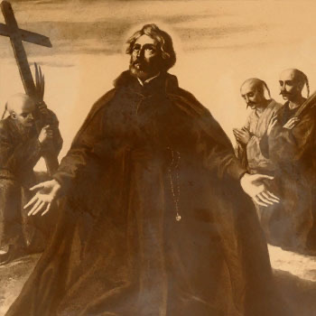

Isusovački blaženici
Svećenik · Misionar · Mučenik
Bl. João Batista Machado
1581.–1617.
João Batista Machado s Azora ostao je u Japanu nakon zabrane misionara. Posjet kršćanima u naselju oboljelih od gube doveo ga je do uhićenja.
Tekst je preveden i prilagođen uz pomoć umjetne inteligencije.

Izvor slike
- Spomendan
- 22. svibnja
- Zaštitništvo
- Nije navedeno u izvoru
- Životni vijek
- 1581.–1617.
- Napomena o izvoru
- Zaglavlje navodi 22. svibnja 1617., a pripovjedni tekst 22. travnja; zadržan je datum zaglavlja. Izvor također različito navodi zemlju podrijetla; tekst kaže Azori.
- Datum smrti
- 22. svibnja 1617.
U kalendaru zbirke koristi se dan smrti. Taj datum nije zasebna potvrda liturgijskoga spomendana.
Životopis
João Batista Machado rođen je u Angri na Azorima. Nadahnut pismima Franje Ksaverskoga, stupio je u Družbu Isusovu 1601. Studirao je u Goi i Macau, a nakon ređenja otišao u Japan. Poslije zabrane misionara 1614. nastavio je služiti u tajnosti. Prije progona pet je godina mirno pastoralno djelovao.
Uhićen je nakon dolaska kršćanima u naselje oboljelih od gube na otočju Gotō. U zatočeništvu je dijelio kuću s franjevačkim svećenikom; obojica su mogla slaviti misu. Prije pogubljenja međusobno su se ispovjedili. Njihov je primjer potaknuo čuvara Tomonagu da se vrati kršćanskoj vjeri. Machado je umro 1617.
Tekst je preveden i prilagođen uz pomoć umjetne inteligencije.